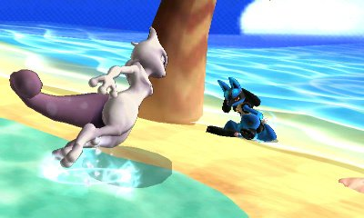
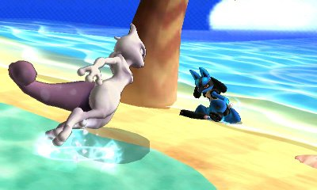

![[ANA JDG] Asterix and the Great Rescue - Megadrive](../vi/6oUXi0ckLmA/default.jpg)
![[ Présentation pour la chaîne Grenier des Joueurs ] JDG Prod](../art/SHAR.6419.583.2.jpg)


Comme vous l'aurez devinez en lisant le titre de l'article, les sites de cette nouvelle liste inspirante sont uniquement consultable pour une qualité optimum par une New3DS!
http://jsa.x10host.com/n3ds/ par exemple, nous montre qu'on peut récupérer les keydowns pour faire des jeux sur navigateurs se jouant avec le pad circulaire, les boutons A Y X, le stick C et l'écran tactile! N'oubliez pas de le visionner dans un nouvel onglet (new tab) quand vous serez sur votre New3DS!
http://froxot.de/ nous montre les jeux qu'on peut faire en javascript sur New3DS! Il y en a déjà 41 et ce sont tous des jeux classiques allant du Domino jusqu'à Tetris en passant par le Sudoku et le Memory!
http://3dspaint.com/ le dernier que j'ai trouvé et qui est hyper-aboutit même si il y a quelques bugs à corrigés notamment dans l'outil de painting parce qu'il semblerait que le OnKeyUp ne soit pas pris en compte et qu'on ne peut faire que des dessins en un seul tracé!
Voila, peut-être que d'autres personnes vont s'amuser à améliorer ces codes et en faire des jeux intégralement jouable sur New3DS dans le browser! Cela donnerait une raison de plus pour en acheter une!
KidpaddleetcieGlin
------------------------------------------------------------------------------------------------------------------------------------------------------
J'avais à peine terminé cet article que j'avais refais des recherches et que j'ai trouvé ça:
12 jeux très beaux et fonctionnels...d'après la vidéo puisque quand on tapote sur le lien, on se mange un "Code d'erreur: 032-1035" parce que le site est en ".mobi" et donc il est crypté!
Vous voyez, quand je dis que les jeux sur le NewNintendo3DSBrowser peuvent être aboutit...si Nintendo ne s'en mêle pas avec ses mises à jour qui empêche le navigateur Web d'être à fond opérationnel sur l'ensemble des sites!
------------------------------------------------------------------------------------------------------------------------------------------------------
J'ai trouvé des jeux compatibles mais pas fait à la base pour la New3DS:
Il prend en compte les touches gauche et droite et le bouton A qui sert à reset le jeu!
C'est un petit jeu où on doit rester sur les plateformes sans sortir de l'écran!
Helicopter: http://funhtml5games.com/?play=helicoptergame
Il prend en compte la touche A et l'écran tactile pour remonter l'hélicoptère! C'est un petit jeu bien rageant où on doit éviter les obstacles!


![[La p'tite discute]Kidpaddleetcie à Le Masque!](../5252/79895252/pics/3266081672_1_3_neZn4kzA.png)

![[Jeu-Vidéo]Le succès de certaine entreprise](../5252/79895252/pics/3256678832_1_7_DyGeEr9F.jpg)
![[Jeu-Vidéo]Le succès de certaine entreprise](../5252/79895252/pics/3256678832_1_9_Cpaji0DS.png)
![[Jeu-Vidéo]Le succès de certaine entreprise](../5252/79895252/pics/3256678832_1_19_VMqGyMqr.png)
![[Jeux-Vidéos]Pokémon Rumble World](../5252/79895252/pics/3250201136_1_3_7NDJqn9B.jpg)
![[Jeux-Vidéos]Pokémon Rumble World](../5252/79895252/pics/3250201136_1_5_WBBCg8vi.jpg)
![[Jeux-Vidéos]Pokémon Rumble World](../5252/79895252/pics/3250201136_1_7_j8QnvhNk.jpg)
![[Jeux-Vidéos]Pokémon Rumble World](../5252/79895252/pics/3250201136_1_9_zHHsOjUN.jpg)
![[Jeux-Vidéos]Pokémon Rumble World](../5252/79895252/pics/3250201136_1_11_kVeJveb3.jpg)
![[Jeux-Vidéos]Pokémon Rumble World](../5252/79895252/pics/3250201136_1_13_DU9MXEbl.jpg)
![[Jeux-Vidéos]Pokémon Rumble World](../5252/79895252/pics/3250201136_1_15_uD28LAS0.jpg)
![[Jeux-Vidéos]Pokémon Rumble World](../5252/79895252/pics/3250201136_1_17_2PpEq9A1.jpg)

 



![[Mini-Délire]Master-Leader](../5252/79895252/pics/3230507455_1_4_tr2ObogA.jpg)
![[Le Cycle de Nintendo]Présentation et Traduction](../5252/79895252/pics/3230191713_1_2_um6yOlqg.png)
![[Le Cycle de Nintendo]Présentation et Traduction](../5252/79895252/pics/3230191713_1_4_9Y6qwmfY.png)

Partage